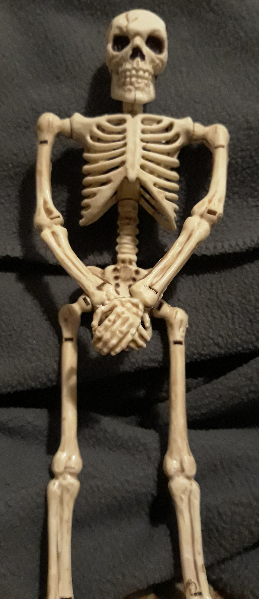
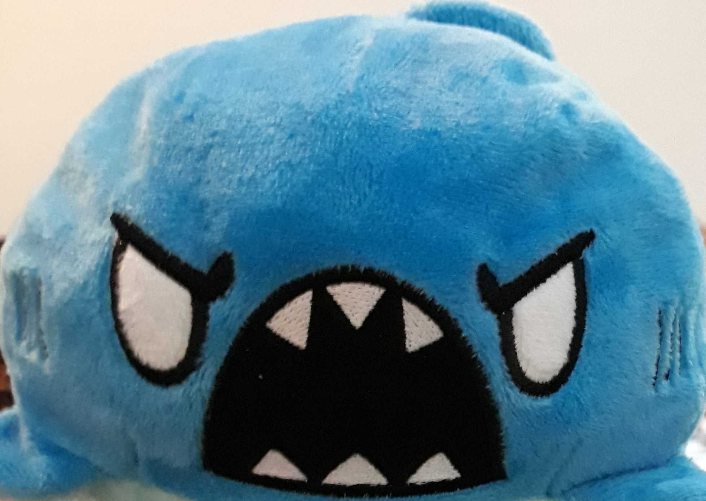

Jeevis lived long ago, back before refrigeration. Problem was, he was also a bit eater. So he lived his life on the water, hunting giant sea creatures to sate his hunger.
Ever wondered where all the sea dragons are? You have Jeevis to thank for that.

It had no name. Half sea-dragon and half shark, it remembered the sickening taste of its parents' blood in the water. The blood stuck to its gills as it saw the man who would hunt down all other sea dragons.
Time was its friend. Seeing him slaughter so many of its kind was not an easy thing to do, but watch it must. It watched for every miniscule movement, from the tensing of a muscle to a flicker of the eye. As its blood boiled, it forced itself to think clearer than any drop of water.
It would ultimately fail to save the last of the true sea dragons, but with that last battle, it finally found an opening in his technique.
By the time it finally fought him, it had practiced the finishing blow a million times, and it ripped his stomach open.